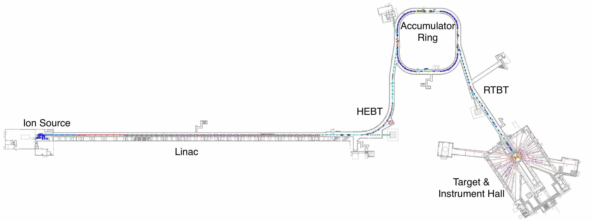
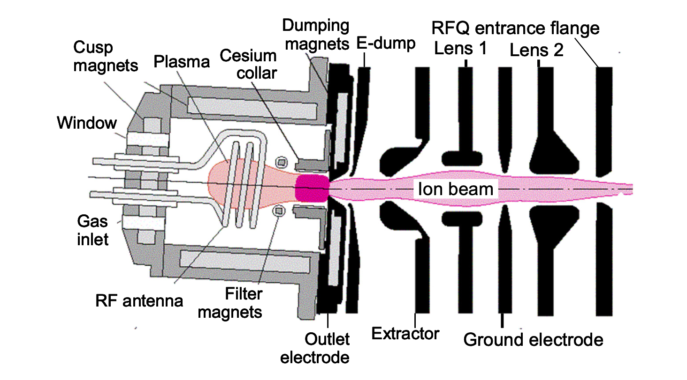
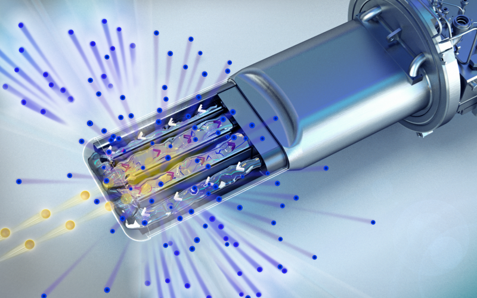
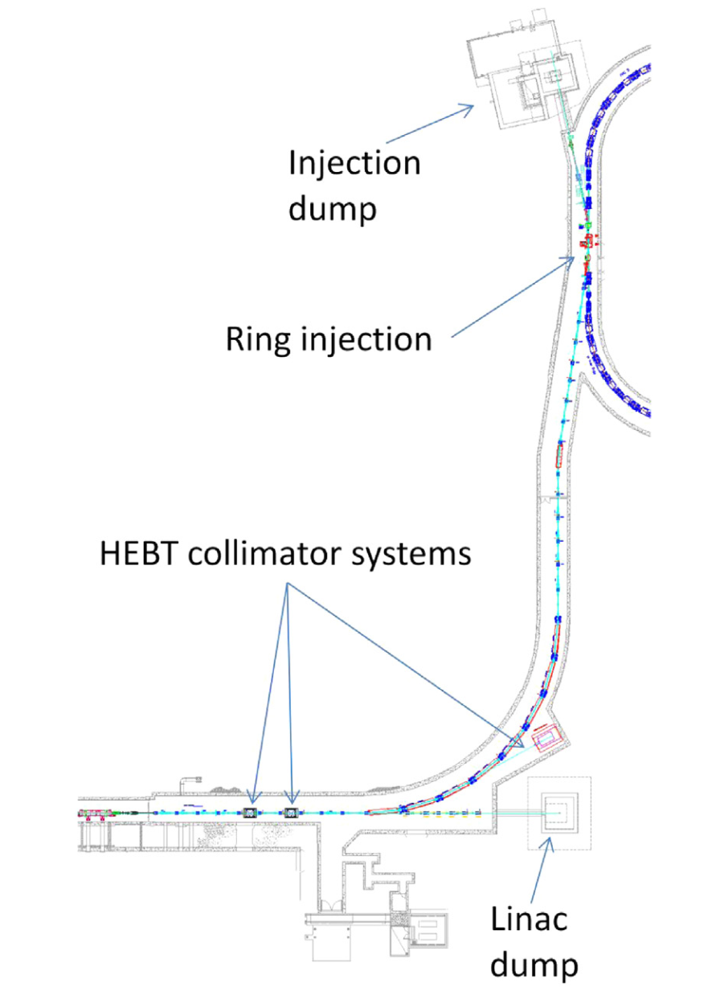
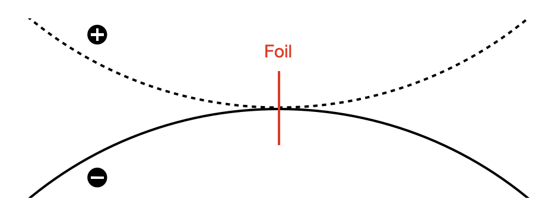
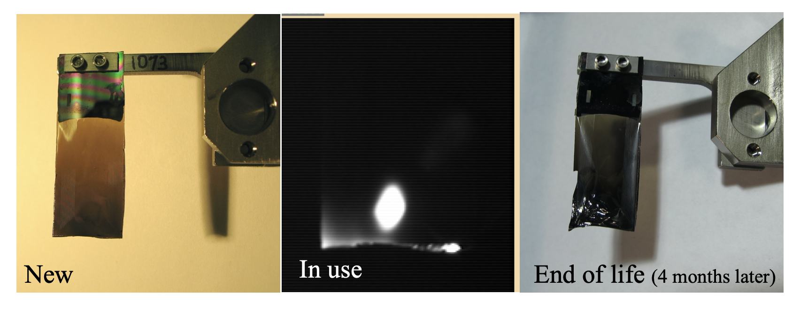
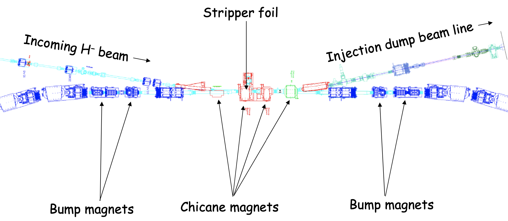
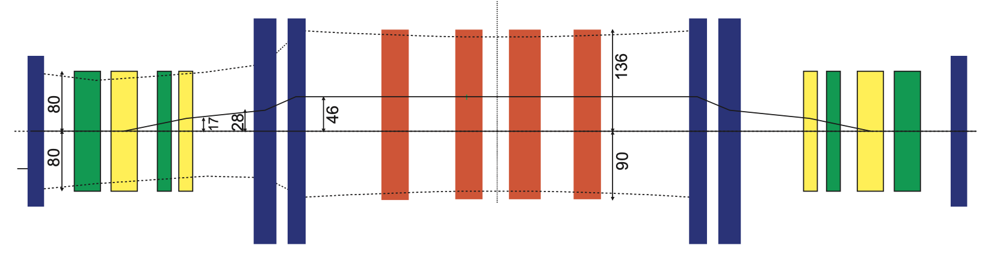
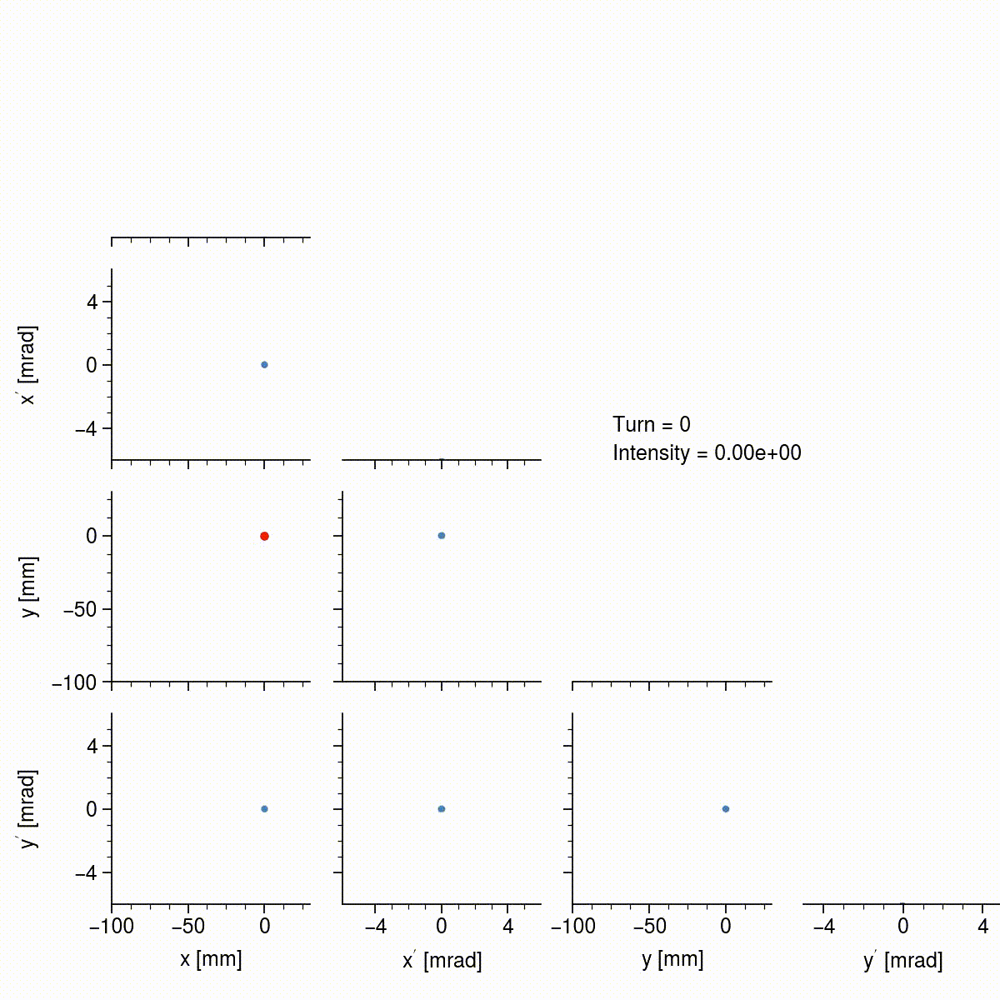

Painting a particle beam
There is a great scene in the otherwise disappointing movie Iron Man 2 in which Tony Stark builds a particle accelerator in his house.
The movie makes it look like a complicated process, but modern large-scale accelerators are immensely more complicated than the one Stark builds. In fact, I’m amazed that such machines have been built and work as expected. One example is the Spallation Neutron Source (SNS).
A quick tour of the SNS

The goal of the SNS is to produce extremely bright, pulsed neutron beams for neutron scattering experiments. These neutrons are produced through the process of spallation by colliding a proton beam with a Mercury target. The power of the proton beam must be as high as possible to maximize the brightness of the neutron beam, and creating such a high-power beam is a multi-step process; particles must travel all the way from the ion source on the far left to the target on the far right, passing though many different sections on their journey. We’re first going to mention the basic function of each of these sections, and then we’re going to look in more detail at the relatively small but extremely important injection region of the machine. This is the point where the HEBT meets the accumulator ring in the above diagram.
Ion source, front end, and linac
The beam originates in the ion source. As explained later, the beam is not actually made of protons at this point, but is instead made of H\(^-\) ions (proton + two electrons). The ion source consists of a vacuum chamber filled with gas, and an oscillating electric field which ionizes the gas to form a glowing, pink plasma. The H\(^-\) particles are then extracted from the plasma; I asked one of the researchers at SNS (who doesn’t work on the ion source) how exactly these ions are extracted, and they said it’s “black magic”, so I guess it’s not straightforward.

The H\(^-\) beam is then accelerated to around 2.5 MeV, focused, and “chopped” into 1000 minipulses. Each minipulse is about 700 nanoseconds long, and they’re separated by a gap of about 300 nanoseconds. The dynamics in this region are strongly influenced by space charge.
Each minipulse is now ready to be accelerated. The next section of the machine is called the linac (linear accelerator), a long, straight section whose purpose is to accelerate the minipulses up to 1 GeV (around 90% of the speed of light) while maintaining an acceptable beam size. This is done using a series of normal-conducting and superconducting radio-frequency cavities. There is a lot to talk about in the linac, but I’ll stop here since I don’t have much knowledge of this area of the machine yet.
HEBT, injection region, and accumulator ring
The high-energy beam transport (HEBT, pronounced “hebbet”) guides the fully accelerated minipulse from the linac to the left edge of the accumulator ring. At this point, all the ions in the minipulse are converted to protons and injected into the accumulator ring (more on this in the next section). The minpulse takes 1 microsecond to travel around the ring, at which point a second minipulse is injected and the circulating beam doubles in intensity. This repeats 1000 times over the course of one millisecond until the final beam, called a pulse, contains around \(1.5 \times 10^{14}\) protons. That seems like a lot until you consider that Avagadros number is one billion times larger! 60 of these pulses contains about the same energy as a stick of dynamite.
RTBT and target
Finally, the entire pulse is extracted from the ring and travels down the ring-target-beam-transport (RTBT) in which it is directed to the Mercury target, producing neutrons. These neutrons are then cooled and transported to various instrumental halls for use in neutron scattering experiments.

Injection
Now we’re going to discuss the injection region in more detail (see image below). Somehow, all the negatively charged ions need to be converted to positively charge protons, and the beam from the linac needs to merge with the circulating beam in the ring without derailing its trajectory; it’s as if the ions were trying to merge onto a busy highway. The specific method used at SNS is charge exchange injection, which we discuss first. We’ll then move on to discuss phase space painting, which is used to mitigate the effects of space charge in intense beams.

H\(^-\) charge exchange
Consider two oppositely charged beams which have the same kinetic energy but opposite charges. Also assume that we’re dealing with point particles which do not interact with each other and have no transverse velocity. If these beams are sent thought a dipole magnet, their paths will be bent in opposite directions with the same radius of curvature. If they additionally have opposite angles of incidence, there will be a point in the dipole at which both beams are moving parallel to each other. Now imagine that, at this very instance, the charge of all the particles in one of the beams changes sign. The two beams would then be identical and would continue along the same trajectory, although there may be an offset. It’s possible to also choose the horizontal and vertical positions of the two beams such that they converge and travel along identical paths.

The idea is to do this with the two beams in the SNS: the negatively charged H\(^-\) beam the linac and the positively charged proton beam which is circulating in the ring. Russian scientists developed a method to do this in the 1960’s using a thin foil which strips the two electrons from the Hydrogen ions but leaves the protons. The foil properties need to be chosen carefully. It needs to be the right material and thick enough to have a high stripping efficiency (number of ions successfully stripped divided by total number of ions), but not so thick that most of the protons are scattered. It also needs to be able to survive high numbers of foil hits without being destroyed. Thus, the choice of foil parameters requires a knowledge of materials science. The SNS uses diamond foils as in the following images.

Dealing with extra particles
Some of the H\(^-\) hold on to their electrons as they pass through the foil, and some only lose one electron, becoming H\(^0\). To deal with these particles, the foil is placed in a dipole field. Because many of the H\(^0\) particles are in excited states, it is likely that their electron will be stripped by the magnetic field soon after the foil; this is known as Lorentz stripping. So a lot of these will become protons and join the circulating beam, just a bit late to the party. The remaining non-protons continue away from the ring and encounter another foil which removes the electrons so that they can be guided to a beam dump. There is also the need to catch the stripped electrons, which can have significant kinetic energies, but I won’t discuss that here.
Is Liouville’s theorem violated?
Those familiar with Liouville’s theorem may object to the charge-exchange method. Liouville’s theorem applies to any system which obeys Hamilton’s equations:
\[ \dot{\mathbf{q}} = \frac{\partial\mathbf{H}}{\partial\mathbf{p}} ,\quad \dot{\mathbf{p}} = -\frac{\partial\mathbf{H}}{\partial\mathbf{q}},\]
where \(\mathbf{q}\) are the coordinates and \(\mathbf{p}\) are the momenta. Imagine we took a volume of phase space and started to fill it with particles; in fact, we fill all of the infinite number of points inside the volume. Then we evolve the system in time. The final distribution of particles may have changed shape, but Liouville’s theorem states that its volume will not have changed. Mathematically, this is due to Hamilton’s equations being equivalent to a coordinate transformation whose Jacobian has a determinant equal to one. So, the objection is that the phase space volume of the entire system (linac beam + circulating beam) seems to decrease when they are merged, i.e., the linac beam is stacked directly on top of the circulating beam, and that this should be disallowed by Liouville’s theorem. Is this true?
I read a paper by A. Ruggiero which helped to clarify this issue [2]. The key point is that Liouville’s theorem deals with distributions rather than finite numbers of particles. Any finite number of particles will not fill up every point in phase space, so there is nothing preventing another finite number of particles from being added to the empty regions. The limitation is that it’s not clear how to guide two beams of the same charge to the same position using dipole magnets; hence, charge exchange. I should note, however, that this does not seem to be the explanation put forth in the talks I’ve heard on this subject. I’m planning to discuss this with some other people in the field.
The future: lasers
A major research project at the SNS is to demonstrate laser-assisted charge exchange (LACE), in which a laser is used to excite the ions and a dipole magnet is used to strip the magnets intead of a foil. This would overcome the scattering losses from foils as well as their finite lifetimes; it is a very promising approach as machines continue to increase in power [3].
Phase space painting
In the last section, we assumed that the particles didn’t interact with each other, but in reality, space charge is the fundamental limit on the intensity in high-power hadron accelerators. Injecting at the same position in space will cause the beam to become very dense, and the beam will then expand due to the increased space charge forces. It’s likely that this will produce a very non-uniform distribution which, as mentioned in this post, is undesirable. This is the motivation for so-called phase space painting or simply painting. The idea is to change the transverse position and momentum of the circulating beam over time in order to slowly fill or “paint” the beam in phase space and hopefully produce a more uniform density beam. Another motivation for painting is to avoid excessive foil hits, since these lead to shorter foil lifetimes and also beam scattering.
Time-dependent kicker magnets
Here is a zoomed in view of the injection region.

The blue elements which aren’t labeled in the ring are just quadrupoles used to focus the beam. This leaves the “bump” or “kicker” magnets and the “Chicane” magnets. These are both dipoles, but they are a bit different. The chicane dipoles provide a fixed horizontal bump to the closed orbit so that it is aligned with the beam from the linac. The kickers, on the other hand, can move the closed orbit horizontally or vertically, and they’re time-dependent. Regarding the latter point, the current from the magnet’s power supply, and therefore the magnetic field, can be varied during injection. Let’s take a look at the vertical closed orbit with the kickers turned on (black line).

The dark blue boxes are quadrupoles, the red boxes are Chicane dipoles, and the remaining elements are the horizontal (green) and vertical (yellow) kickers. Without the kickers, the closed orbit will just go straight through the center of each magnet, and a similar thing holds in the horizontal plane. Thus, we have control over the horizontal and vertical position of the circulating beam relative to the injected beam. But there is also the possibility that the trajectory is converging or diverging at the foil, so we also have control over the horizontal and vertical circulating beam slope relative to the injected beam. These eight kickers therefore give full control over the transverse phase space coordinates of the circulating beam relative to the injected beam at every point during the injection.
Production painting
The time-dependence of each kicker magnet is determined by a waveform which determines the current given to its power supply as a function of time; for example, we could have a linear waveform, square root waveform, etc. Choosing these waveforms amounts to choosing the initial and final position/slope of the circulating beam, as well as the rate of change in the position/slope. The standard “production” scheme in the SNS (as in neutron production) is to use a square root waveform so that
\[ x_{inj} - x_{co} = (x_{max} - x_{min}) \sqrt{t / t_{max}} + x_{min}, \] \[ y_{inj} - y_{co} = (y_{max} - y_{min}) \sqrt{t / t_{max}} + y_{min}, \]
where the co subscript means “closed orbit” and inj means “injected beam”. The slope of the circulating beam is kept at zero in this scheme.
It’s probably best to use some visualizations at this point. I simulated the injection painting using PyORBIT; included in this simulation are effects such as space charge, nonlinear magnetic fringe fields, scattering from the foil, etc., so the results should be somewhat similar to the real world. 260 simulation particles were injected on each turn to give a final number of 260,000, which should provide good statistics for the space charge solver which operates on a \(128 \times 128\) transverse grid. The whole simulation took a few hours to run on my laptop. (The space charge solver I used makes some approximations in the longitudinal dimension; a more realistic solver will push the execution time from a few hours to a few days.)
The following animation shows this simulated beam at the injection point during the first 35 turns in the ring. The off-diagonal subplots show the correlations between the four phase space variables (a sample of 10,000 particles is used) and the on-diagonal subplots show the histograms for each variable. The foil location is shown by the red dot in the \(x\)-\(y\) plane.

Keep in mind that each little cluster is actually a bunch of particles; it’s hard to resolve because the width is small compared to the full beam. Notice that, since the circulating and injected beams are offset to begin with, the injected particles start to trace ellipses in the \(x\)-\(x'\) and \(y\)-\(y'\) projections. The frequencies at which the particles oscillate in each plane are not the same, so the path in \(x\)-\(y\) space is constantly changing, eventually filling a rectangular region. The next animation shows the beam over all 1000 turns.

Notice that the beam size is slowly increasing, and also that the density is steadily increasing; this is only apparent from the histograms since I’m using a random sample of particles in the scatter plots. Space charge, as well as nonlinear effects, tend to round the hard edges of the the originally rectangular beam. The beam also exhibits some interesting dynamics after turn 100, and again after turn 800, when it begins to tilt back and forth, which is probably due to space charge coupling the two planes. In the end, the beam has a somewhat uniform density, is not tilted, is not rotating, and is quite intense (\(1.5 \times 10^{14}\) particles), so the basic goals of the painting scheme have been achieved. The beam can now be extracted and collided with the target to produce neutrons.